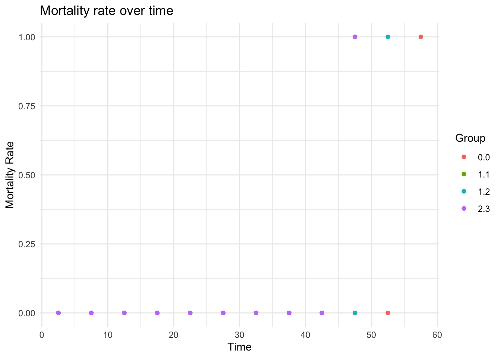
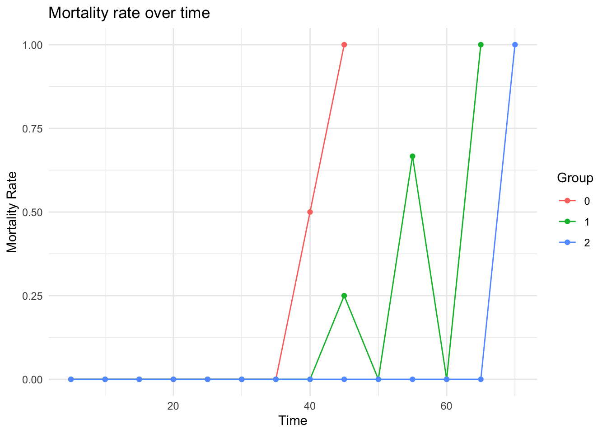

library(lifelihood)
library(tidyverse)
#> ── Attaching core tidyverse packages ──────────────────────── tidyverse 2.0.0 ──
#> ✔ dplyr 1.1.4 ✔ readr 2.1.5
#> ✔ forcats 1.0.0 ✔ stringr 1.5.1
#> ✔ ggplot2 3.5.2 ✔ tibble 3.2.1
#> ✔ lubridate 1.9.4 ✔ tidyr 1.3.1
#> ✔ purrr 1.0.4
#> ── Conflicts ────────────────────────────────────────── tidyverse_conflicts() ──
#> ✖ dplyr::filter() masks stats::filter()
#> ✖ dplyr::lag() masks stats::lag()
#> ℹ Use the conflicted package (<http://conflicted.r-lib.org/>) to force all conflicts to become errorsLoad lifelihood
Data prepration
df <- datapierrick |>
mutate(
geno = as.factor(geno),
par = as.factor(par),
spore = as.factor(spore)
)
generate_clutch_vector <- function(N) {
return(paste(
"pon",
rep(c("start", "end", "size"), N),
rep(1:N, each = 3),
sep = "_"
))
}
clutchs <- generate_clutch_vector(28)
df |> head()
#> par geno spore sex_start sex_end sex mat_start mat_end mat pon_start_1
#> 1 0 0 0 13 1000 0 12 13 6 20
#> 2 0 0 0 13 1000 0 12 13 3 19
#> 3 0 0 0 15 1000 0 14 15 1 18
#> 4 0 0 0 14 1000 0 13 14 6 20
#> 5 0 0 0 19 1000 0 18 19 2 21
#> 6 0 0 0 12 1000 0 11 12 1 18
#> pon_end_1 pon_size_1 pon_start_2 pon_end_2 pon_size_2 pon_start_3 pon_end_3
#> 1 21 3 23 24 9 26 27
#> 2 20 5 23 24 6 27 28
#> 3 19 5 22 23 10 25 26
#> 4 21 7 24 25 6 27 28
#> 5 22 9 25 26 6 29 30
#> 6 19 6 23 24 6 26 27
#> pon_size_3 pon_start_4 pon_end_4 pon_size_4 pon_start_5 pon_end_5 pon_size_5
#> 1 3 30 31 2 33 34 8
#> 2 3 31 32 6 35 36 9
#> 3 5 29 30 5 33 34 6
#> 4 5 31 32 8 35 36 8
#> 5 6 33 34 6 38 39 3
#> 6 4 30 31 4 34 35 5
#> pon_start_6 pon_end_6 pon_size_6 pon_start_7 pon_end_7 pon_size_7 pon_start_8
#> 1 37 38 5 41 42 5 45
#> 2 39 40 9 43 44 4 47
#> 3 37 38 4 41 42 8 45
#> 4 39 40 7 43 44 7 47
#> 5 41 42 9 45 46 6 49
#> 6 38 39 8 42 43 6 46
#> pon_end_8 pon_size_8 pon_start_9 pon_end_9 pon_size_9 pon_start_10 pon_end_10
#> 1 46 7 48 49 3 53 54
#> 2 48 7 51 52 2 56 57
#> 3 46 6 49 50 3 54 55
#> 4 48 8 51 52 5 57 58
#> 5 50 2 54 55 3 58 59
#> 6 47 7 51 52 5 56 57
#> pon_size_10 pon_start_11 pon_end_11 pon_size_11 pon_start_12 pon_end_12
#> 1 4 58 59 3 62 63
#> 2 3 60 61 4 65 66
#> 3 2 57 58 4 62 63
#> 4 3 61 62 2 65 66
#> 5 6 65 66 1 68 69
#> 6 4 60 61 4 65 66
#> pon_size_12 pon_start_13 pon_end_13 pon_size_13 pon_start_14 pon_end_14
#> 1 4 67 68 3 72 73
#> 2 3 70 71 2 74 75
#> 3 5 66 67 3 72 73
#> 4 3 NA NA NA NA NA
#> 5 4 73 74 2 77 78
#> 6 2 NA NA NA NA NA
#> pon_size_14 pon_start_15 pon_end_15 pon_size_15 pon_start_16 pon_end_16
#> 1 2 77 78 2 82 83
#> 2 7 80 81 3 84 85
#> 3 2 76 77 5 NA NA
#> 4 NA NA NA NA NA NA
#> 5 2 82 83 4 87 88
#> 6 NA NA NA NA NA NA
#> pon_size_16 pon_start_17 pon_end_17 pon_size_17 pon_start_18 pon_end_18
#> 1 2 87 88 3 92 93
#> 2 2 90 91 1 NA NA
#> 3 NA NA NA NA NA NA
#> 4 NA NA NA NA NA NA
#> 5 2 93 94 2 97 98
#> 6 NA NA NA NA NA NA
#> pon_size_18 pon_start_19 pon_end_19 pon_size_19 pon_start_20 pon_end_20
#> 1 3 97 98 3 NA NA
#> 2 NA NA NA NA NA NA
#> 3 NA NA NA NA NA NA
#> 4 NA NA NA NA NA NA
#> 5 6 103 104 3 124 125
#> 6 NA NA NA NA NA NA
#> pon_size_20 pon_start_21 pon_end_21 pon_size_21 pon_start_22 pon_end_22
#> 1 NA NA NA NA NA NA
#> 2 NA NA NA NA NA NA
#> 3 NA NA NA NA NA NA
#> 4 NA NA NA NA NA NA
#> 5 4 128 129 4 NA NA
#> 6 NA NA NA NA NA NA
#> pon_size_22 pon_start_23 pon_end_23 pon_size_23 pon_start_24 pon_end_24
#> 1 NA NA NA NA NA NA
#> 2 NA NA NA NA NA NA
#> 3 NA NA NA NA NA NA
#> 4 NA NA NA NA NA NA
#> 5 NA NA NA NA NA NA
#> 6 NA NA NA NA NA NA
#> pon_size_24 pon_start_25 pon_end_25 pon_size_25 pon_start_26 pon_end_26
#> 1 NA NA NA NA NA NA
#> 2 NA NA NA NA NA NA
#> 3 NA NA NA NA NA NA
#> 4 NA NA NA NA NA NA
#> 5 NA NA NA NA NA NA
#> 6 NA NA NA NA NA NA
#> pon_size_26 pon_start_27 pon_end_27 pon_size_27 pon_start_28 pon_end_28
#> 1 NA NA NA NA NA NA
#> 2 NA NA NA NA NA NA
#> 3 NA NA NA NA NA NA
#> 4 NA NA NA NA NA NA
#> 5 NA NA NA NA NA NA
#> 6 NA NA NA NA NA NA
#> pon_size_28 death_start death_end
#> 1 NA 102 103
#> 2 NA 95 96
#> 3 NA 78 79
#> 4 NA 66 67
#> 5 NA 135 136
#> 6 NA 74 75Creata a data lifelihood object
dataLFH <- lifelihoodData(
df = df,
sex = "sex",
sex_start = "sex_start",
sex_end = "sex_end",
maturity_start = "mat_start",
maturity_end = "mat_end",
clutchs = clutchs,
death_start = "death_start",
death_end = "death_end",
covariates = c("par", "spore"),
model_specs = c("wei", "lgn", "wei")
)Estimation
results <- dataLFH |>
lifelihood(
path_config = get_config_path("config_pierrick"),
MCMC = 3,
delete_temp_files = FALSE
)
#> [1] "Intermediate files are stored at: /private/var/folders/w5/_8wgjw3j5cg6mgrth3s2kg9m0000gn/T/RtmpW156oH/pkgdown-quarto-1cb22ce73419/lifelihood_49_2902_8186_1790"AIC & BIC
Summary results
coeff(results, "expt_death")
#> int_expt_death eff_expt_death_par1 eff_expt_death_par2
#> -2.0355679 0.1816456 0.4769303
#> eff_expt_death_spore1 eff_expt_death_spore2 eff_expt_death_spore3
#> 0.1653421 0.2233875 -0.1136377
logLik(results)
#> [1] -345062
results$effects
#> name estimation stderror parameter kind
#> 1 int_expt_death -2.0355679 0 expt_death intercept
#> 2 eff_expt_death_par1 0.1816456 0 expt_death coefficient
#> 3 eff_expt_death_par2 0.4769303 0 expt_death coefficient
#> 4 eff_expt_death_spore1 0.1653421 0 expt_death coefficient
#> 5 eff_expt_death_spore2 0.2233875 0 expt_death coefficient
#> 6 eff_expt_death_spore3 -0.1136377 0 expt_death coefficient
#> 7 int_survival_shape -4.7642310 0 survival_shape intercept
#> event
#> 1 mortality
#> 2 mortality
#> 3 mortality
#> 4 mortality
#> 5 mortality
#> 6 mortality
#> 7 mortality
results$mcmc
#> Markov Chain Monte Carlo (MCMC) output:
#> Start = 1
#> End = 3
#> Thinning interval = 1
#> LL int_expt_death eff_expt_death_par1 eff_expt_death_par2
#> [1,] -345062.7 -1.901039 0.00930207 0.2774382
#> [2,] -345059.5 -1.992679 0.08341975 0.4824205
#> [3,] -345057.1 -2.035568 0.18164560 0.4769303
#> eff_expt_death_spore1 eff_expt_death_spore2 eff_expt_death_spore3
#> [1,] 0.2275596 0.2547690 -0.03929779
#> [2,] 0.1573313 0.2473932 -0.14584881
#> [3,] 0.1653421 0.2233875 -0.11363775
#> int_survival_shape
#> [1,] -4.714556
#> [2,] -4.807733
#> [3,] -4.764231
results$vcov
#> # A tibble: 3 × 7
#> int_expt_death eff_expt_death_par1 eff_expt_death_par2 eff_expt_death_spore1
#> <dbl> <dbl> <dbl> <dbl>
#> 1 -1.90 0.00930 0.277 0.228
#> 2 -1.99 0.0834 0.482 0.157
#> 3 -2.04 0.182 0.477 0.165
#> # ℹ 3 more variables: eff_expt_death_spore2 <dbl>, eff_expt_death_spore3 <dbl>,
#> # int_survival_shape <dbl>Prediction on new data
newdata <- tibble(
par = c(0, 1, 2, 0, 1, 2, 1),
spore = c(0, 1, 2, 1, 0, 1, 1)
) |>
mutate(
par = as.factor(par),
spore = as.factor(spore)
)
prediction(results, "expt_death", newdata)
#> [,1]
#> 1 -2.035568
#> 2 -1.688580
#> 3 -1.335250
#> 4 -1.870226
#> 5 -1.853922
#> 6 -1.393296
#> 7 -1.688580
prediction(results, "expt_death", newdata, type = "response")
#> [,1]
#> 1 37.42898
#> 2 50.53274
#> 3 67.48748
#> 4 43.25992
#> 5 43.87469
#> 6 64.43862
#> 7 50.53274Visualization
- Observed mortality rate
plot_observed_mortality_rate(
dataLFH,
interval_width = 20,
max_time = 170,
log_y = TRUE
)
#> Warning: Removed 1 row containing missing values or values outside the scale range
#> (`geom_line()`).
#> Warning: Removed 1 row containing missing values or values outside the scale range
#> (`geom_point()`).
plot_observed_mortality_rate(
dataLFH,
interval_width = 15,
max_time = 170,
log_y = TRUE,
groupby = "spore"
)
#> Warning in ggplot2::scale_y_log10(): log-10 transformation introduced infinite
#> values.
#> Warning in ggplot2::scale_y_log10(): log-10 transformation introduced infinite
#> values.
#> Warning: Removed 19 rows containing missing values or values outside the scale range
#> (`geom_line()`).
#> Warning: Removed 19 rows containing missing values or values outside the scale range
#> (`geom_point()`).
- Fitted mortality rate
plot_fitted_mortality_rate(
results,
interval_width = 5,
groupby = c("spore", "par")
)
#> Warning: Removed 3 rows containing missing values or values outside the scale range
#> (`geom_line()`).
#> Warning: Removed 3 rows containing missing values or values outside the scale range
#> (`geom_point()`).
plot_fitted_mortality_rate(
results,
newdata = newdata,
interval_width = 5,
groupby = "spore"
)
#> Warning: Removed 6 rows containing missing values or values outside the scale range
#> (`geom_line()`).
#> Warning: Removed 6 rows containing missing values or values outside the scale range
#> (`geom_point()`).
Retrieve mortality rates
You can get
df_mort_rates <- mortality_rate_data(dataLFH, interval_width = 10)